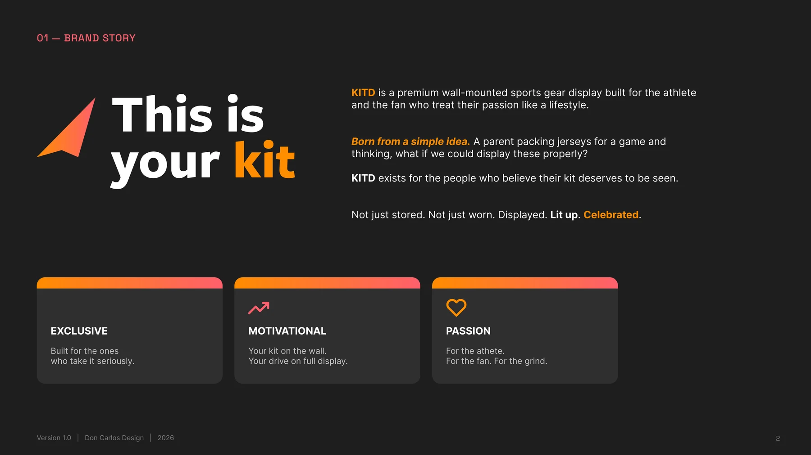
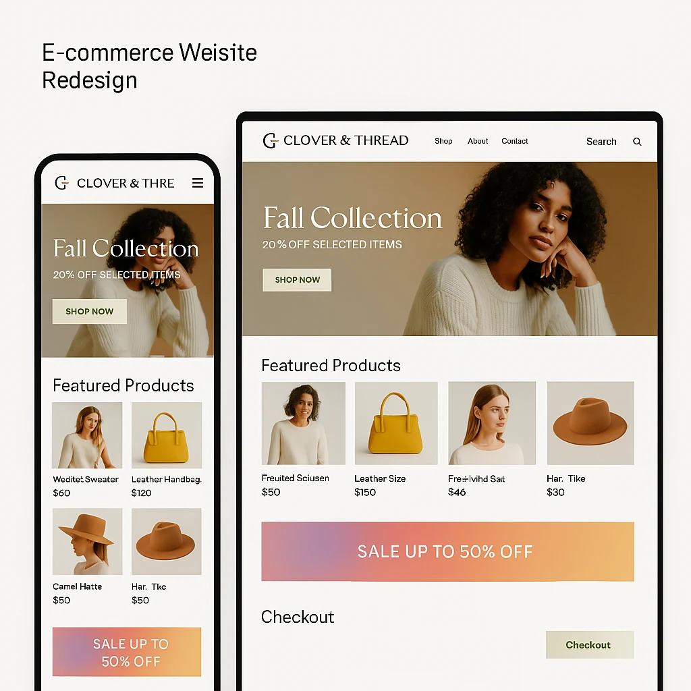
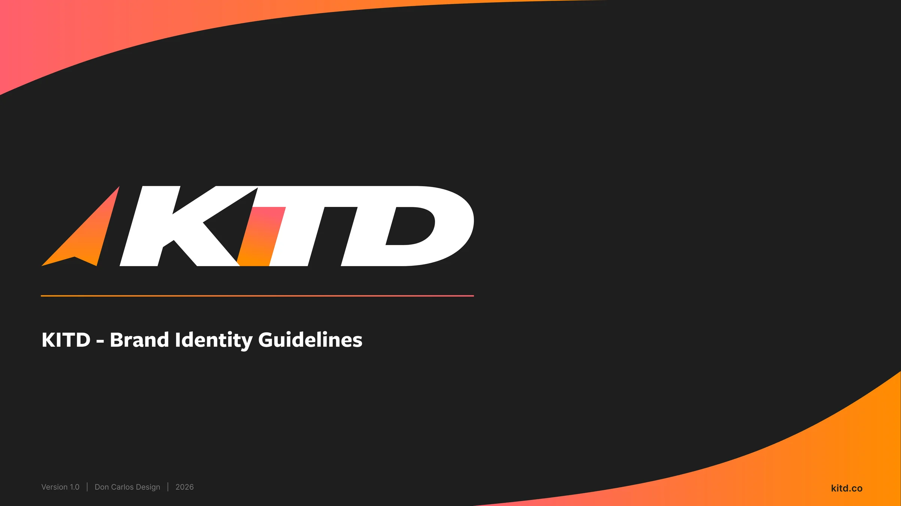
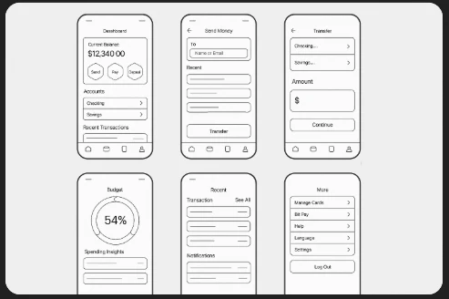
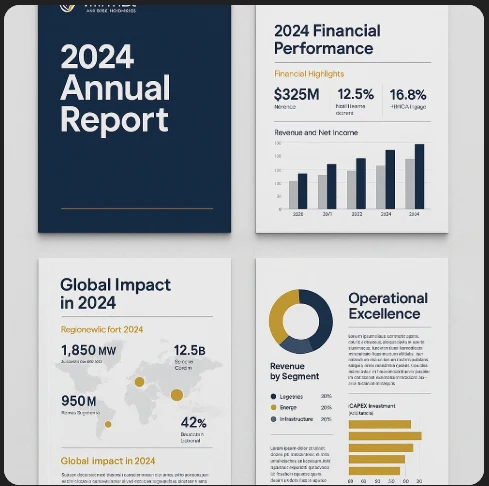
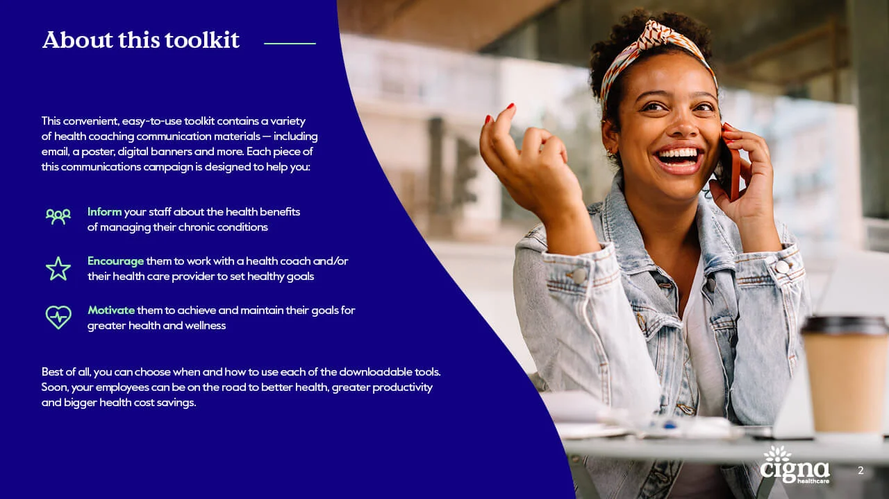
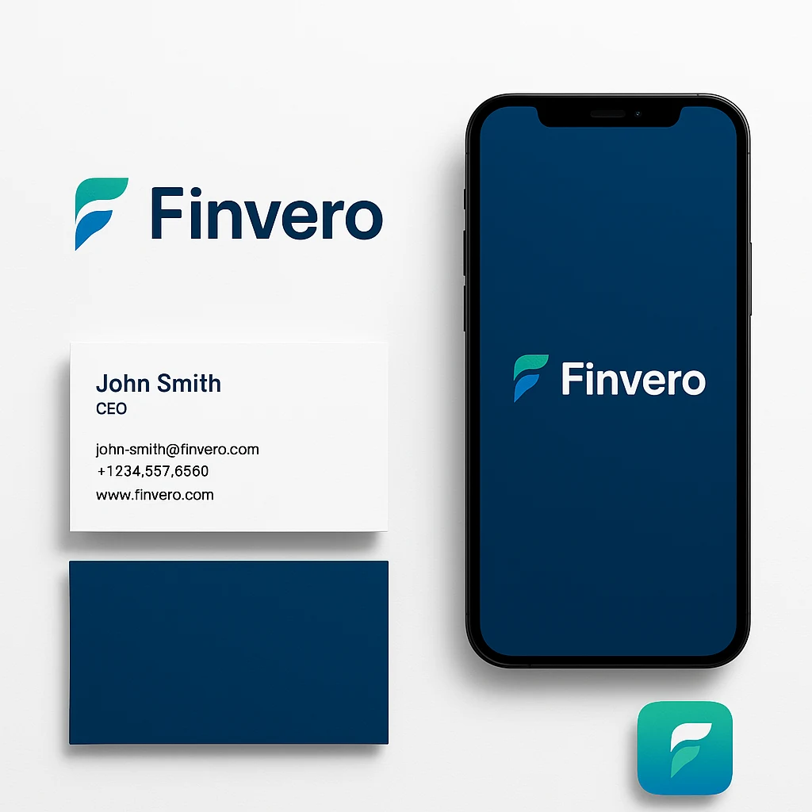
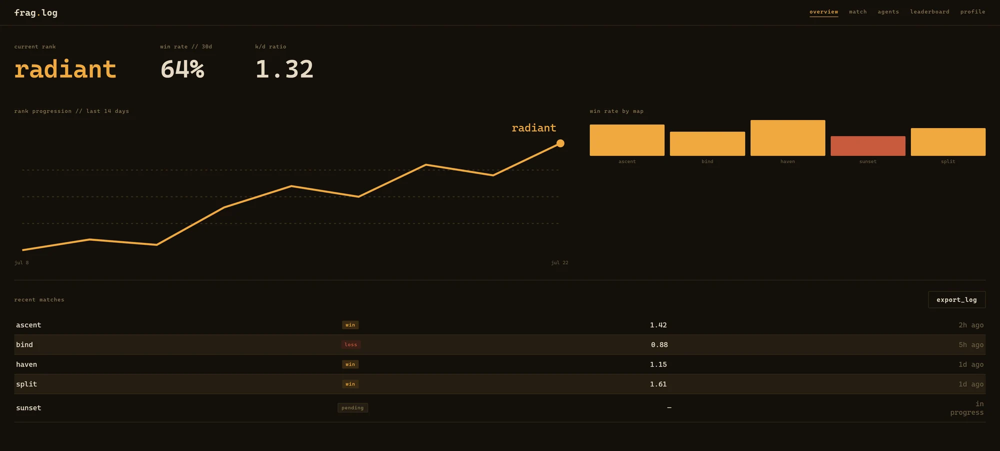
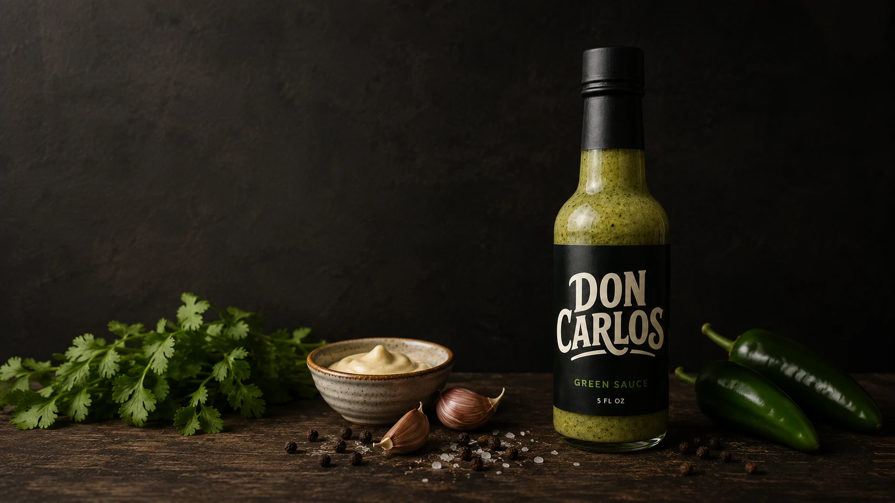

My Projects
A showcase of my best design and development work across various industries and platforms.

KITD Brand Identity
A full brand identity system for a premium wall-mounted sports gear display—built before the product ever shipped. The project covered brand strategy, a six-version logo system, and a complete visual identity guideline.
- Brand story, positioning, and voice defined from scratch
- Six-version logo system for dark, light, and print use cases
- A distinct shape language derived from the wordmark itself
- Full guidelines document plus a plain-language file guide
More Projects

Clover & Thread Redesign
Brand refresh and e-commerce redesign for a sustainable fashion label, driven by real conversion data.

KITD Brand Identity
Full brand identity system for a premium wall-mounted sports gear display, from strategy to a six-version logo system.

EverTrust Mobile Banking
UX/UI redesign concept for a mobile banking app, focused on security and ease of use.
Concept Project
Vantrex Annual Report
Corporate annual report concept with data visualization and engaging layout.
Concept Project
Restaurant Branding
Complete branding and menu design for a new upscale restaurant.
Educational Platform
Learning management system with intuitive navigation and engagement features.

Cigna & Evernorth Healthcare Collateral
Print and digital design collateral for healthcare campaigns, toolkits, and provider-matching tools.

Finvero Brand Identity
Brand identity concept for an AI-driven personal finance app aimed at Gen Z and Millennials.
Concept Project
FRAG.LOG
A terminal-inspired stats tracker for competitive FPS players, designed and coded into a working prototype.
Concept Project
Don Carlos—Green Sauce
Label system, ad campaign, and brand foundations for a three-generation family hot sauce recipe.
My Design Process
Every successful project follows a structured process that ensures quality results.
Discovery
Understanding your business, goals, target audience, and project requirements through detailed consultation.
Research
Market research, competitor analysis, and user research to inform design decisions and strategy.
Concept & Design
Creating wireframes, prototypes, and visual designs based on research findings and project goals.
Development
Bringing designs to life through clean, efficient code and attention to detail in implementation.
Testing & Launch
Rigorous testing across devices and browsers, followed by a smooth launch and handover.
Have a project in mind?
Let's collaborate to create something amazing that elevates your brand and engages your audience.